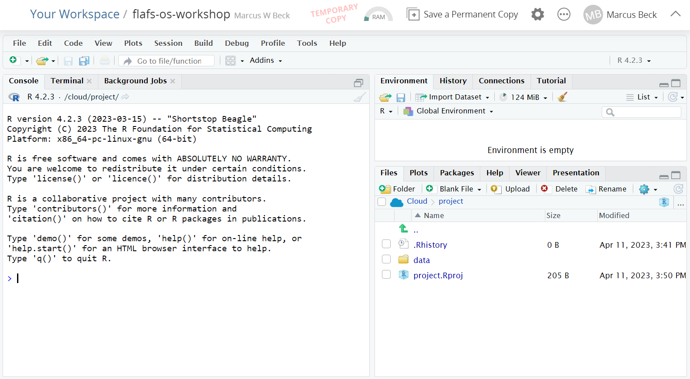

install.packages("usethis")7 Setup for the Workshop
Thanks for your interest in the open science workshop. You will need to do the following, outlined below, before the workshop. The last item is optional, but strongly encouraged.
- Install R: link
- Install RStudio: link
- Install Quarto: link
- GitHub create account: link
- Install Git (optional): link
Most of these steps will require administrative privileges on a computer. Work with your IT staff to complete the setup if you do not have these privileges. Please reach out if you have any issues with installation: mbeck@tbep.org
7.1 Install R and RStudio
R and RStudio are separate downloads and installations. R is the underlying statistical computing software. RStudio is a graphical integrated development environment (IDE) that makes using R much easier and more interactive. You need to install R before you install RStudio.
Thanks to the USGS-R Training group and Data Carpentry for making their installation materials available. The following instructions come directly from their materials, with a few minor edits to help you get set up.
7.1.1 Windows: Download and install R
Go to CRAN and download the R installer for Windows. Make sure to choose the latest stable version (v4.2.3 as of April 2023).
Once the installer downloads, Right-click on it and select “Run as administrator”.
Type in your credentials and click yes (or if you don’t have administrator access have your IT rep install with Admin privileges).
You can click next through the standard dialogs and accept most defaults. But at the destination screen, please verify that it is installing it to C:\Program Files\R

At the “Select Components” screen, you can accept the default and install both 32-bit and 64-bit versions.

At this screen, uncheck ‘Create a desktop icon’ because non-admin users in Windows will be unable to delete it.

7.1.2 Windows: Download and install RStudio
Download RStudio from here.
After download, double-click the installer. It will ask for your administrator credentials to install (you might need to have your IT rep install again).
Accept all the default options for the RStudio install.

7.1.3 macOS: Download and install R
7.1.4 macOS: Download and install RStudio
- Go to the RStudio download page
- Under Installers select the appropriate RStudio download file for macOS
- Double click the file to install RStudio
7.1.5 Check Install
Once installed, RStudio should be accessible from the start menu. Start up RStudio. Once running it should look something like this:

7.2 Install Quarto
A visual editor for Quarto is installed with RStudio. However, you’ll need to install Quarto CLI to make full use of its features.
Navigate to https://quarto.org/docs/get-started/. You’ll see a screen that looks like this:

Select the download appropriate for your operating system (Windows is the big blue button). After the file is downloaded, navigate to the folder containing the file, double-click to install, and accept the default settings at the prompts.
After installation is done, open RStudio (or close and open again) and select the Terminal tab. This tab is located on the bottom-left pane, next to the Console tab. Type quarto check at the prompt and press enter. You should see something like this if installation was successful.
7.3 Create GitHub account
Open a web browser and enter the url https://github.com. On the top-right, you should see a button to sign up. Click the button and register an account by choosing an email, username, and password.

7.4 Install Git (optional)
After you’ve registered a new GitHub account, you can install the Git software on your computer. Git is version control software used by RStudio that allows you to access GitHub. Open the url https://git-scm.com/book/en/v2/Getting-Started-Installing-Git and follow the instructions for your operating system.
After Git is installed, open RStudio (or close and open again) to verify the installation. You should see a new “Git” tab located in the top-right pane of RStudio.

7.4.1 Make sure RStudio can talk to GitHub via Git
The next step can be a bit tricky, but is essential if you want to access your GitHub using using RStudio and Git. First, install the usethis R package in RStudio.
You must let Git know who you are and that you have permission to write to a GitHub repository. First, let Git know who you are, where you enter your user name and email associated with the account from the previous step.
usethis::use_git_config(user.name="Jane Doe", user.email="jane@example.org")Next, you need to setup a personal access token (PAT) that defines the permissions to write to a repository. This can be done as follows:
usethis::create_github_token()Then follow the remaining prompts to complete the PAT creation. A more thorough explanation can be found here.
7.5 This is hard!
If you have trouble installing any of the software prior to the workshop, you can use use RStudio in the cloud on the Posit website. This is only a backup option and we strongly encourage you to troubleshoot the installation when able.
To use RStudio in the cloud, copy this link and paste it in a web browser: https://posit.cloud/content/5775087
If you do not have a Posit Cloud account, you will see this screen when you first visit the URL:
You can setup an account for free using a login you create or through a third-party (Google or GitHub).
After your account is setup, you should a screen that looks like this:

You’ll see that this is a TEMPORARY COPY under your account. Make it permanent by clicking the button on top. This will save any changes you make to this project under your account.